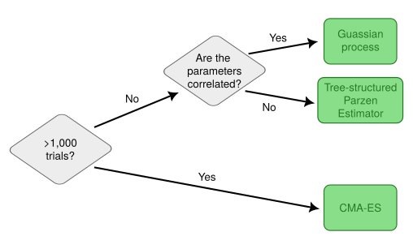
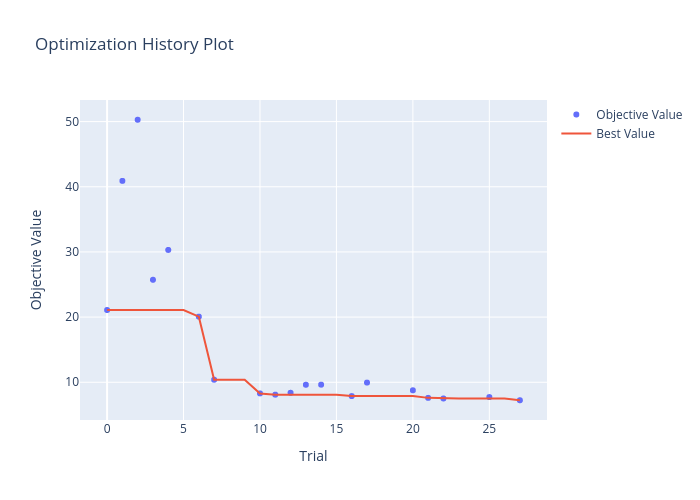
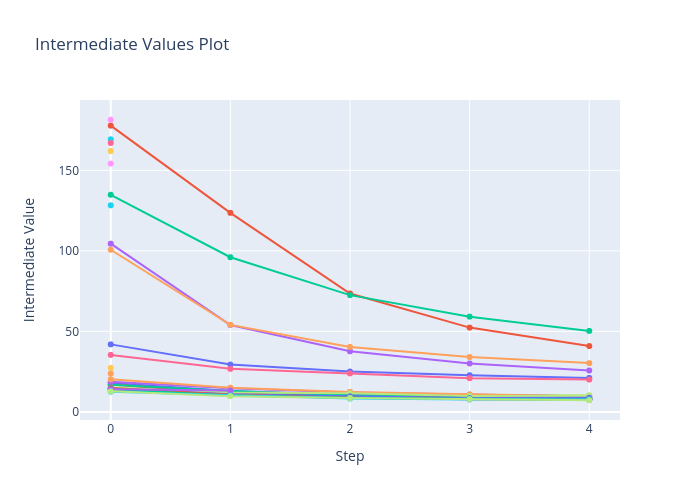
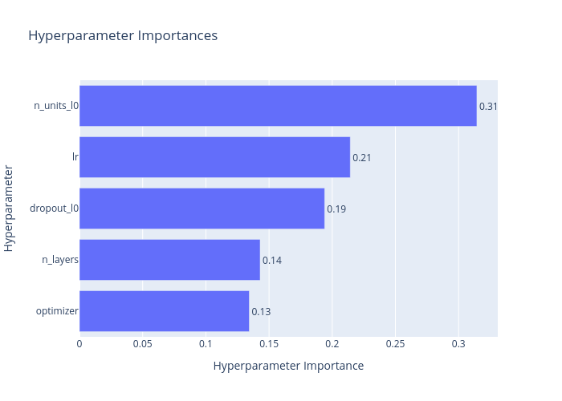

AANN 02/05/2024
Table of Contents
Hyperparameter optimisation with Optuna
Overview
In this example we will use the Optuna hyperparameter optimization framework (Akiba et al (2019)) to optimise the training and structure of a simple model for MNIST classification. This is largely based on an example from Optuna's GitHub repository.
In hyperparameter optimization, the objective function is the validation score of a model as a function of the hyperparameters used to train it. Akiba et al suggest, at a technical level, this requires good algorithms for two things: sampling and pruning. Sampling refers to choosing the next set of hyperparameters to trial based on the results of previous trials. For example, a Gaussian process can be used to approximate the objective function. A decision tree for how to select the sampling algorithm is given in Figure 1. Pruning refers to the process of terminating a trial early if it becomes clear the current hyperparameters are bad. Pruning is important because it means those computational resources can be allocated to more promising configurations.

Figure 1: Decision tree from authors for selecting sampling algorithm.
The full script with all the code is here.
Usage
Minimal example
The following example is taken from the Optuna website and
demonstrates the core components of its use. The two main components
are the trial and the study. The trial has methods which are used
to sample the hyperparameters (e.g. the use of suggest_float in
the snippet below). The study carries out the optimization of the
objective function.
import optuna def objective(trial): x = trial.suggest_float('x', -10, 10) return (x - 2) ** 2 study = optuna.create_study() study.optimize(objective, n_trials=100) study.best_params # E.g. {'x': 2.002108042}
MNIST example
Since we are working with the MNIST dataset (as we have done in several previous blog posts), the input size is the number of pixels in the image and there are 10 output classes.
INPUT_SIZE= 28 * 28 CLASSES = 10
Model definition
Similar to the objective function in the example above, here we
define a model structure to optimise. We use the trial argument to
specify the configuration: the number and size of the hidden layers,
and the dropout proportion to use during training.
def define_model(trial): n_layers = trial.suggest_int("n_layers", 1, 3) layers = [] in_features = INPUT_SIZE for i in range(n_layers): out_features = trial.suggest_int("n_units_l{}".format(i), 4, 128) layers.append(nn.Linear(in_features, out_features)) layers.append(nn.ReLU()) p = trial.suggest_float("dropout_l{}".format(i), 0.2, 0.5) layers.append(nn.Dropout(p)) in_features = out_features layers.append(nn.Linear(in_features, CLASSES)) layers.append(nn.LogSoftmax(dim=1)) return nn.Sequential(*layers)
Objective function
Keep in mind that the objective function for the optimization is the
validation error for training with a given set of hyperparameters. The
individual steps of the training are not the objective, but we can use
them to prune trials that are under-performing. The following lines,
which appear at the end of the objective function definition within
the training loop, notify the study of how a particular trial is
going.
trial.report(validation_loss, epoch) if trial.should_prune(): raise optuna.exceptions.TrialPruned()
Then the objective function itself is defined as
def objective(trial): model = define_model(trial).to(DEVICE) optimizer_name = trial.suggest_categorical("optimizer", ["Adam", "SGD"]) lr = trial.suggest_float("lr", 1e-5, 1e-1, log=True) optimizer = getattr(optim, optimizer_name)(model.parameters(), lr=lr) train_loader, valid_loader = get_mnist() for epoch in range(EPOCHS): model.train() for batch_idx, (data, target) in enumerate(train_loader): data, target = data.view(data.size(0), -1).to(DEVICE), target.to(DEVICE) optimizer.zero_grad() output = model(data) loss = LOSS_FN(output, target) loss.backward() optimizer.step() model.eval() validation_loss = 0 with torch.no_grad(): for batch_idx, (data, target) in enumerate(valid_loader): data, target = data.view(data.size(0), -1).to(DEVICE), target.to(DEVICE) output = model(data) loss = LOSS_FN(output, target) validation_loss += loss.item() trial.report(validation_loss, epoch) if trial.should_prune(): raise optuna.exceptions.TrialPruned() return validation_loss
Running the study
To run the study we use the following
study = optuna.create_study()
study.optimize(objective, n_trials=100, timeout=600)
Once the study has finished, the optuna.visualisation module can be used to visualise the results for example
optuna.visualization.plot_optimization_history(study)
returns a Plotly Figure object of the performance of the trials across the study.
Results
The results of this optimization are summarised by the following print out. Perhaps surprisingly, this favoured a single layer model with 79 units.
Study statistics:
Number of finished trials: 28
Number of pruned trials: 9
Number of complete trials: 19
Best trial:
Value: 7.240957830101252
Params:
n_layers: 1
n_units_l0: 79
dropout_l0: 0.2814220675694274
optimizer: Adam
lr: 0.004062149899383117
Figure 2 shows the values of the objective function across the trials of the study, highlighting how the optimal solution has progressed. The red line indicates the best performance seen up until that point in the study.

Figure 2: The objective function value decreases across the study trials
Figure 3 zooms in on each of the trials, showing how
the optimisation process unfolded. There are some points in this
figure that do not have subsequent evaluations. These isolated points
are where the pruning algorithm has terminated the trial early to use
the computational resources elsewhere. The values for this plot comes
from the report values, (see the end of the objective function
above). Note that the first evaluation comes after a complete epoch of
training which is why some start off so much better than the others.

Figure 3: The intermediate values of the objective function withing each trial.
Finally, and perhaps most importantly for the subsequent optimisation, Figure 4 ranks the variables being optimised in terms of importance.

Figure 4: The ranked importance of the hyperparameters.
Discussion
I found Optuna very easy to use with a well-thought-out API which covered everything I need and more (there is also a fancy web-dashboard, but I haven't tried that.) This example is probably too small to demonstrate the use of the package properly, but should give a good idea of how it works.
Thanks
Thanks to Jackson Kwok, and Domenic Germano for helpful comments on a draft of this.